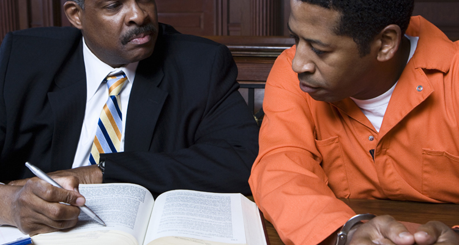
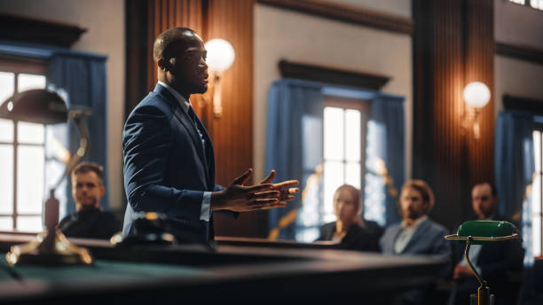

Lawyers play an important role in shaping societies that are fair and peaceful. They ensure that justice is accessible not only to the rich, but also to the poor and marginalized, giving everyone a chance to be heard. By protecting the rule of law, they help prevent abuse of power and discrimination in communities.
A strong legal system is the backbone of a fair society. With lawyers working to uphold laws, people can trust that their rights will be defended. This supports the United Nations’ SDG 16: Peace, Justice, and Strong Institutions, reminding us that fairness is essential for peace.
Lawyers protect the rights of those who cannot fight for themselves. They speak for people who are often ignored or silenced, making sure that justice reaches everyone regardless of their background. Their work shows that every person deserves fairness and dignity before the law.
Without lawyers, many injustices could go unchallenged. Corruption and oppression would easily spread, leaving the weak without defense. By standing up for truth and fairness, lawyers keep justice alive and ensure equality is not just an idea, but a reality.

In the Philippines, the Public Attorney’s Office (PAO) provides free legal services to those who cannot afford a lawyer. This ensures that poor citizens still have access to justice. Organizations like FLAG also work to defend human rights, representing victims of abuse and speaking out against violations.
Every case handled by these groups makes a difference in society. Their actions show that justice can be real and present, even for the most vulnerable. Through their dedication, they prove that fairness and accountability can be achieved when lawyers act for the good of the people.
This project highlights the important role lawyers play in protecting justice and building strong institutions. It was created as part of an advocacy campaign under the United Nations Sustainable Development Goal 16. The goal is to raise awareness about why equal access to justice is necessary for peace and development.
By understanding the value of lawyers, we can inspire more support for fair and accessible justice systems. Justice for all is not just a dream—it is a responsibility that each of us shares. Together, we can build a future where equality, fairness, and peace guide the way we live.